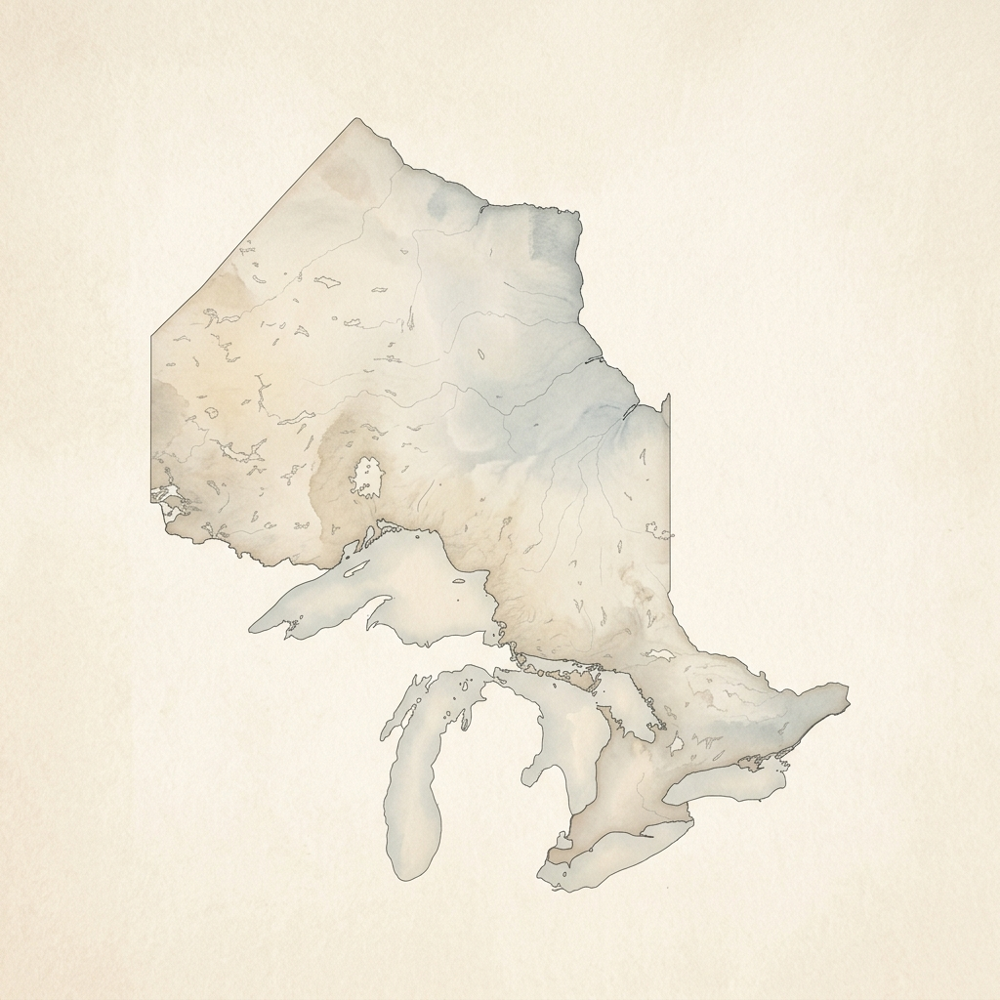
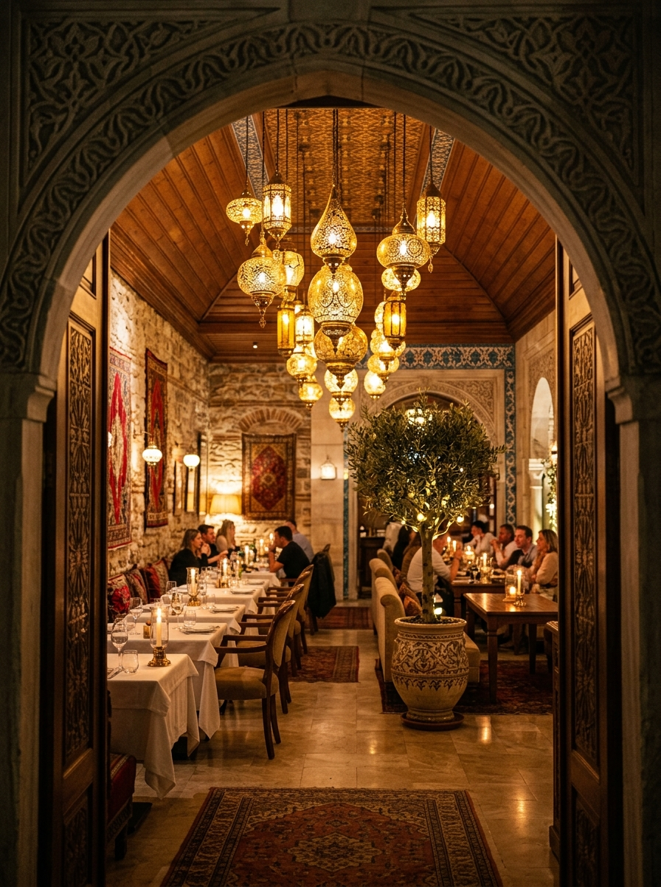
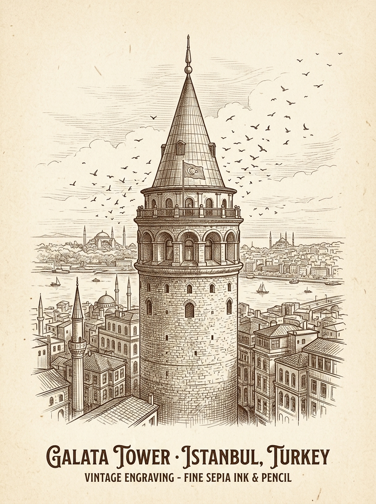

ANTALYA
OUR PARTNERS
Same Taste. More Locations. Across Ontario.
Experience Antalya's authentic Turkish cuisine at our partner locations across Ontario. Each restaurant brings the same tradition, flavour, and warm hospitality.

ONTARIO
01
Burlington
02
Kitchener
03
London

Bringing
Turkey Closer
To You
Turkey Closer
To You

01
Burlington
◈
1860 Appleby Line,
Burlington, ON L7L 7H7
Burlington, ON L7L 7H7
A warm and inviting space to enjoy our signature Turkish dishes.